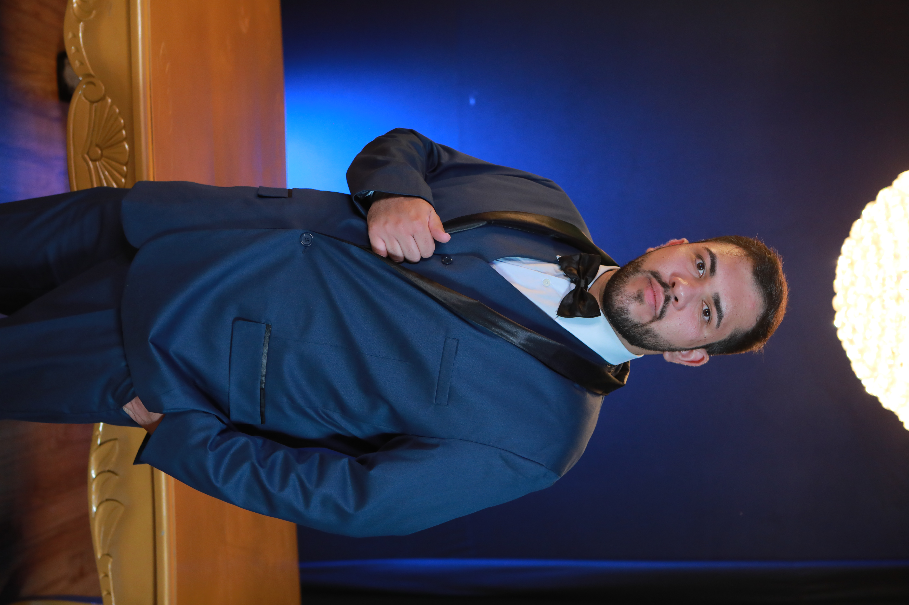

M.Sc. · Doutorando · GDMaF · UNIFEI
Atualmente, realiza um doutorado em co-tutela, sendo doutorando em Ciência e Engenharia de Materiais pela Universidade Federal de Itajubá (UNIFEI) e em Ingeniería y Producción Industrial pela Universitat Politècnica de València (UPV). Mestre em Ciência e Engenharia de Materiais e graduado em Engenharia de Materiais pela UNIFEI. Conselheiro Interno da Associação de Pessoas de Pós-graduação (APG) UNIFEI, integrando a Gestão "Vanguarda Científica" (2024–2026). Pesquisador no Grupo de Desenvolvimento de Materiais Funcionais (GDMaF) e no Grupo de Investigación en Materiales Cerámicos y Composites (CERACOM). Possui experiência em síntese, processamento e caracterização de óxidos termoelétricos, em métodos químicos de síntese e conformação de pós cerâmicos, em dopagem de perovskitas com íons de terras raras e cátions de metais de transição, em crescimento de monocristais conversores de energia pela técnica Bridgman-Stockbarger vertical, em técnicas de sinterização não convencionais de cerâmicas eletrônicas, como spark plasma sintering (SPS) e sinterização assistida por irradiação de micro-ondas; e, especialmente, em interação da radiação de micro-ondas com manganitas.